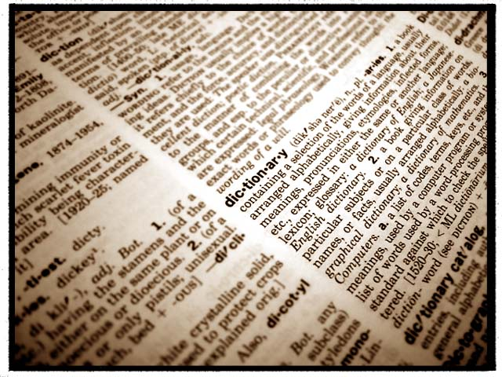

Towards enriching Arabic Language and enhancing Arabic support in hand-held devices ...

The rapid growth of cross-border markets and global concerns are creating a huge demand to facilitate knowledge sharing between societies. Digitizing information is important, but enabling this information to be accessed and understood by other communities is fundamental. The diversity of languages, cultures, and standards are the main barriers to sharing and consuming knowledge. Several research projects have prioritized joint research and development in this direction, especially integrating and exploiting multilingual and multicultural content and digital libraries. All of this is done using ontologies, thesauri, and multilingual dictionaries. However, the Arabic language still lacks efficient multilingual dictionaries and thesauri specially to use on hand-held devices such as the emerging iPhone or Android systems.
This project aims to build an iPhone/Android multilingual dictionary that allows mobile users to search and retrieve concepts easily. This application can be customized to also connect with existing Ontologies/Dictionaries/Thesauri via APIs and/or Web Services. This dictionary will not be a classical lookup dictionary; but the team is expected to innovate with new ideas to shape a new generation of Arabic dictionaries rather than only providing an interface to lookup words from a database.
Remarks:
See Other Project Proposals: